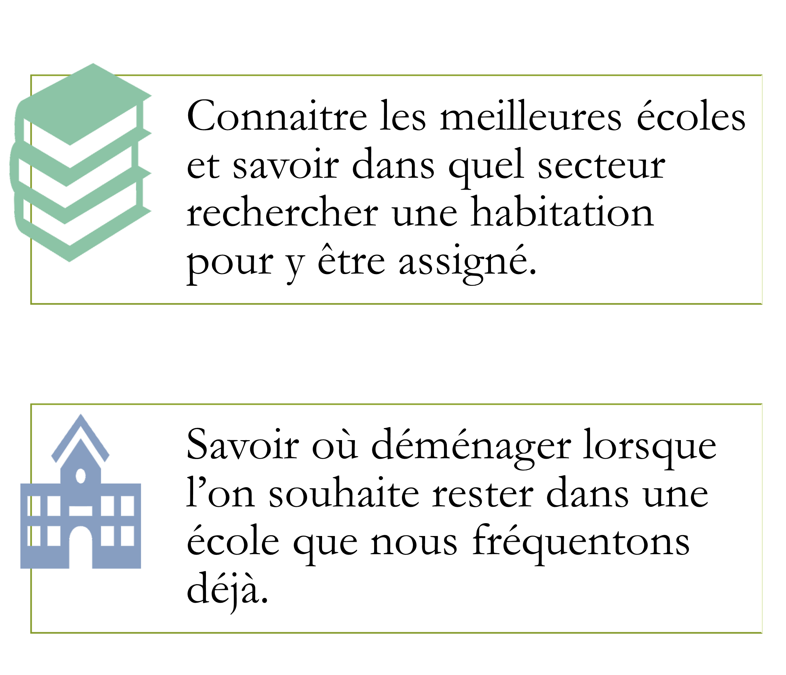

Proposer une solution pour :

Ce travail est produit dans le cadre d'un projet scolaire de fin de programme de DEC en Géomatique au Cegep
Limoilou.
Les scores affichés sont la moyenne des évaluations faites par les utilisateurs du site ayant fréquenté l'école.
Ils ne représentent pas un taux de réussite académique.Ils peuvent être fluctuants en fonction:
Le score affiché au départ est une moyenne globale, il sera adapté en fonction des filtres (programme et/ou
année) sélectionnés.
5 étoiles grises signifient qu'il n'y a pas d'évaluation pour cette école (pour la moyenne générale) ou pour
le
programme choisi (si l'école propose le programme choisi)
Les données sources qui permettront la réalisation sont téléchargées :
Page d'accueil

Formulaire

Projet réalisé par Natacha Brosius Guilon au cours de l'hiver 2024 à Québec.
L'image du haut de page à pour crédit Ecole Vecteurs par Vecteezy
Les fonds de carte proviennent d'ESRI.
L'icone école provient du site icone8.